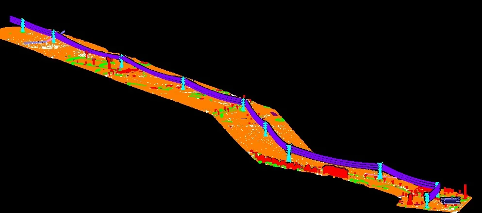
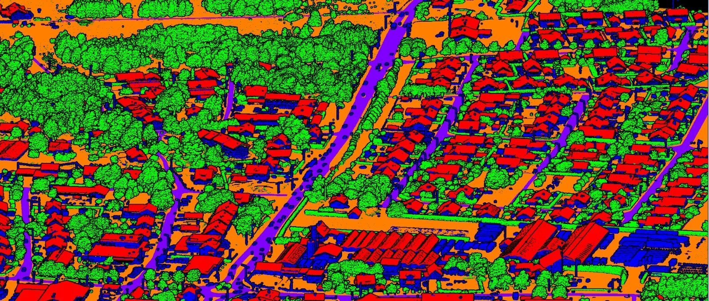
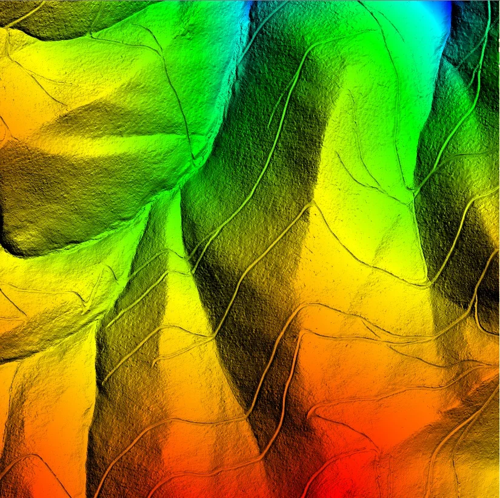

Flagship
Powerline Vegetation Analytics
LiDAR corridor analysis for vegetation proximity, danger-zone identification and operational decision support.
GeoProcess Consulting is a global geospatial production and engineering partner delivering GIS, LiDAR, CAD, BIM/Revit, Telecom GIS, 3D modeling, photogrammetry, remote sensing, mapping, survey-data processing, data annotation, and QA/QC services. We support engineering, infrastructure, transportation, utilities, telecom, oil & gas, mining, AEC, and government projects with scalable, accurate, and reliable geospatial data processing. Our team works as an extended production partner for organizations seeking dependable project support, capacity expansion, and specialized geospatial expertise.
A focused service portfolio for utilities, engineering, mapping and spatial-data workflows.

LiDAR corridor analysis for vegetation proximity, danger-zone identification and operational decision support.

Structured classification of ground, vegetation, buildings and infrastructure from 3D point-cloud data.

Terrain and surface modeling for mapping, engineering, corridor analysis and downstream GIS workflows.
Our workflow connects acquisition, classification, spatial analysis, QA and delivery. The source brief describes a six-stage process from corridor scoping through final export.
Answers to common questions about GeoProcess Consulting, our services and project delivery.
We provide full-lifecycle geospatial analytics and engineering data processing, including:
Danger zone detection for tree pruning near power lines using LiDAR and GIS is a digital safety system. It uses laser scans and maps to find trees that are too close to electric wires. This helps crews clear branches before they cause power outages or fires.
Advanced 3D building classification and vectorization converts unorganized 3D spatial data into clean, structured geometric vectors (like polygons and shapefiles).
Our automated pipeline isolates key infrastructure elements—such as towers, conductor sags, ground surfaces, and buildings—allowing utilities to export directly into GIS databases, CAD layouts, or BIM platforms for structural audits.
Turnaround depends on project scope, point density, and whether the data is linear corridor or area-based:
Choose a date and time online instead of waiting for a reply.